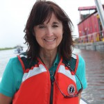
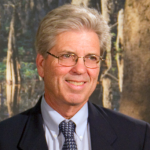

Brown Bag Lecture Series – Spring 2015
212 Design Building Mark your calendars, the CSS Brown Bag Lecture Series is ready for spring! Speakers from the worlds of design, science, and engineering visit LSU to share their thoughts and ideas and encourage debate on a wide range of coastal topics. So bring your lunch, grab a seat, and enjoy the lively discussion. It’s FREE and OPEN TO ALL. We hope you will join us.
Wed, Jan 28 Noon-1:00pm
Gary LaGrange
President & CEO
Port of New Orleans
Port of New Orleans: Shipping, Logistics and Navigation on the Lower Mississippi River
Gary LaGrange has served as President and Chief Executive Officer of the Port of New Orleans since 2001. Under LaGrange’s directions the Port made great expansions in spite of great adversity. During his tenure, the Port opened new, state-of-the-art container, cruise and refrigerated terminals. LaGrange’s leadership brought the Port of New Orleans back into operation two weeks after Hurricane Katrina, the most extensive natural disaster in U.S. history. With over a decade of investment and expansion, the Port of New Orleans in now recognized as the #1 Port for logistics in America. LaGrange serves on the Boards and Executive Committees of the Waterways Council, Inc., and National Waterways Conference where he is a past President. He also serves on the Boards of the Gulf Ports Association of the Americas. He serves on the Executive Committee of the Transportation Research Board.
Click here to listen to Gary LaGrange’s full lecture.
Wed, Feb 11 Noon-1:00pm
Gerard Learmonth
Research Professor & Complex Systems Modeler
University of Virginia
Simulation Games: Participatory Simulation Games for Sustainable Watershed Management
Gerard P. Learmonth Sr. is Director of the Center for Large-Scale Computational Modeling at the University of Virginia in Charlottesville, Virginia. His primary academic appointment is with the Department of Systems and Information Engineering in the School of Engineering and Applied Science and holds a secondary appointment with the Department of Public Health Sciences in the School of Medicine. He also holds a courtesy appointment with the Frank Batten School of Leadership and Public Policy. Learmonth holds a B.S. and M.B.A. from New York University, an M.S. in Operations Research from the Naval Postgraduate School, and the Ph.D. in Statistics and Management Science from the University of Michigan. He has held academic appointments at Eastern Michigan University, Dartmouth College, Boston College, and George Washington University. He has been at UVa since 1999. He is the principal architect of the UVA Bay Game and its successor – Global Water Games. He is currently leading the development of a participatory simulation game for the Louisiana Gulf Coast with proposals outstanding for the Houston/Galveston region, Lake Erie, and the Pearl River Delta in China. He built a Global Sustainable Supply Chain Game for LAUNCH, a consortium of U.S. State Department, USAID, NASA, and Nike, and is designing a participatory simulation game for the administration and staff of the UVa Medical Center.
Click here to listen to Gerard Learmonth’s full lecture.
Wed, Feb 25 Noon-1:00pm
Keith Bowers
Landscape Architect & Restoration Ecologist
Biohabitats
Restoring the Future: Restoring Biodiversity and Ecosystem Functions in a Rapidly Changing World
Keith Bowers has been at the forefront of applied ecology, land conservation and sustainable design. As the founder and president of Biohabitats, Keith has built a multidisciplinary organization focused on regenerative design – the blurring of boundaries between conservation planning, ecological restoration and sustainable design. Using living-systems as the basis for all of its work, Biohabitats applies a whole-systems approach to all of its projects. Keith has applied his expertise to more than 600 projects throughout North America. His work has spanned the scale from site-specific ecosystem restoration projects involving wetland, river, woodland and coastal habitat restoration to regional watershed management and conservation planning, to the development of comprehensive sustainability programs for communities and campuses throughout the country. Keith is the Team Lead for Ecological Restoration under IUCN’s Commission on Ecosystem Management. Recently Keith served on the Board of Directors for the Wildlands Network and on the Board of Directors for the Society for Ecological Restoration, twice as its Chair. He is a Fellow of the American Society of Landscape Architects and is a Professional Wetland Scientist. He holds a B.S. in Landscape Architecture from West Virginia University and an honorary degree from the Conway School of Design.
Click here to listen to Keith Bowers’ full lecture.
Wed, Mar 11 Noon-1:00pm
Marvin “Buddy” Ragland, Jr.
Architect
Coleman Partners Architects
Building on the Batture: Designing the Future Water Institute of the Gulf Marvin Ragland, Jr. has a broad base of architectural knowledge serving as the firm’s principal of many on-going projects for the firm. His experience has been gained by working on national and international commissions including hospitality, residential, commercial, medical, institutional, educational, and religious complexes. In addition to his role in client development, Mr. Ragland is responsible for the administration of on-site supervision and cost estimating of all projects as well as the coordination for and quality control of construction administrative services for the firm. Some of the notable projects which Mr. Ragland has managed include the Baton Rouge Community College as well as the Renovations and Additions to Bon Carre’ Business Center, the historic Baton Rouge Hilton Hotel and Hotel Indigo and the Emerge Center. Mr. Ragland is an active participant of the American Institute of Architects and has served as the AIA Louisiana’s Lobbyist and the Gulf States Regional Director. He has served as guest juror and lecturer at the School of Architecture at Louisiana State University, and continues to be involved in numerous local nonprofit boards and many other civic pursuits.
{kind=link}
Click here to listen to Marvin “Buddy” Ragland’s full lecture.
Wed, Mar 18 Noon-1:00pm
Denise Reed
Chief Scientist
The Water Institute of the Gulf
Using Science to Guide Restoration: Lessons for Coastal Louisiana
Denise Reed, Ph. D., is the Chief Scientist for the Water Institute of the Gulf. She is a nationally and internationally recognized expert in coastal marsh sustainability and the role of human activities in modifying coastal systems. She has worked on coastal issues in the US and in other parts of the world for over 30 years. Dr. Reed has been extensively involved in restoration planning in coastal Louisiana since the early 1990’s with a focus on bringing scientific knowledge to bear in developing sustainable solutions. Reed has also been engaged in Bay-Delta and coastal Louisiana. She has served on numerous board and panels concerning the effects of human alterations on coastal environments and the role of science in guiding ecosystem restoration, including a number of National Research Council Committees. She received her BA and PhD from the University of Cambridge in England.
{kind=link}
Click here to listen to Denise Reed’s full lecture.
Wed, Mar 25 Noon-1:00pm
Lecture will be held in THE DESIGN COMMONS
Virginia Burkett
Chief Scientist
United States Geological Survey
Climate Change: Trends, Projections and Implications for Coastal Louisiana
Virginia Burkett has published extensively on the topics of global change and low-lying coastal zones and was lead author of the United Nations’ Intergovernmental Panel on Climate Change Third, Fourth, and Fifth Assessment Reports, as well as all three U.S. National Climate Assessments. She was formerly Chief of the Forest Ecology Branch at the USGS National Wetlands Research Center in Lafayette, and also served as Secretary/Director of the Louisiana Department of Wildlife and Fisheries, Acting Director of the Louisiana Coastal Zone Management Program, and Assistant Director of the Louisiana Geological Survey. She earned her PhD in Forestry at Stephen F. Austin State University in Nacogdoches, Texas.
{kind=link}
Click here to listen to Virginia Burkett’s full lecture.
Wed, Apr 20 Noon-1:00pm
Bob Marshall
Environmental Journalist
The Lens Nola
The Challenges of Making Complicated Science Readable and Meaningful
Bob Marshall is a New Orleans journalist whose reporting on Louisiana coastal issues has been recognized by two Pulitzer Prizes; the John H. Oakes Prize for Distinguished Environmental Reporting from Columbia University; the Keck Award for best science reporting from The National Academics of Sciences; The Edward Murrow Award from the National Association of Radio and Television reporting; and many others. In 2013, Marshall left The Times-Picayune after a long career and started the Coastal Desk project at The Lens, an independent non-profit online newsroom doing investigative and in-depth reporting on issues concerning New Orleans. His work is published across platforms including print, online, radio and television.
{kind=link}